החיבור (התיזה) כתוב בMicrosoft Word, בפורמט RTF.
הקובץ הראשי נקרא xibur.rtf: זהו מסמך-אב שמקושר לכל שאר חלקי החיבור.
ניתן להוריד את כל החיבור או לעיין בקבצים בודדים.
החיבור המלא כמסמך וורד אחד (ללא מסמכים מקושרים); נוצר בי"ג באב ה'תשע"ב.
This page should be viewed using Microsoft Internet Explorer 4+, with Hebrew support. If you don't have Hebrew support, or don't read Hebrew, you can read a partial English translation here.